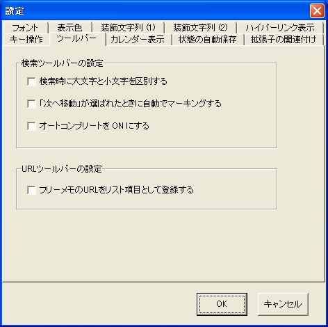

[ツールバー] タブは，検索オプションの設定と，URLツールバーに関する設定項目を含んでいます．
| ツールバー | 項目名 | 効果 |
|---|---|---|
| 検索 | 検索時に大文字と小文字を区別する | 大文字と小文字を区別して検索するようにします． 標準では，大文字と小文字は区別しません． |
| 検索 | 「次へ移動」が選ばれたときに自動でマーキングする | 検索ツールバーに文字を入力して「マーキング」ボタンを押さずに 「次へ移動」を押下した場合にも，自動でマーキングを行います． なお，マーキングに使用される色は，[表示色]タブから変更できます． |
| 検索 | オートコンプリートを ON にする | 検索ツールバー，検索ダイアログで入力したデータを キャッシュしてオートコンプリートを行います． 検索キーワードの情報は，プログラム終了時に破棄しています． |
| URL | フリーメモのURLをリスト項目として登録する | フリーメモ欄に記入したURLの内容が，URLツールバーの項目として表示されるようになります． URLツールバーを使わない場合，このオプションを無効にすることで， 起動時やフリーメモ編集時の処理を軽くすることができます． |